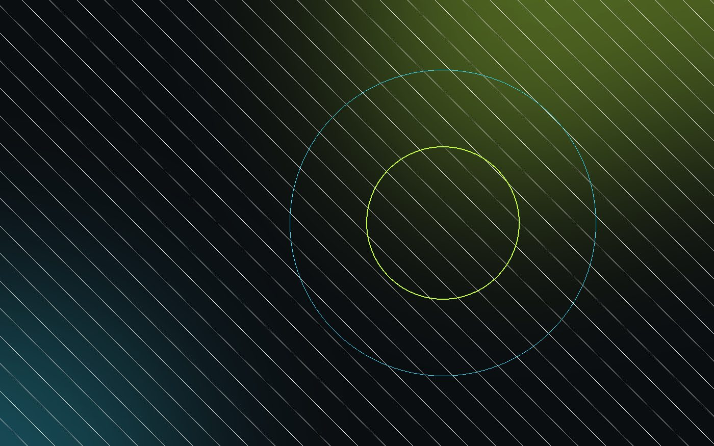

01Infraestructura self-hosted
20+ servicios 24/7: gateway de IA, web, paneles y bases de datos. Linux, Docker y PM2, publicado con Cloudflare Tunnel y accesible por VPN mesh (Tailscale).
- Linux
- Docker
- Cloudflare
- Tailscale
- PM2
Sysadmin junior · Barcelona · 2026
01 — Sobre mí
Tengo 18 años y estoy acabando SMX en Monlau. Me flipa montar cosas que funcionan solas: un servidor que aguanta, una red que no se cae y automatizaciones que te ahorran horas. Administro un laboratorio propio con 20+ servicios en producción y quiero seguir creciendo en sistemas, redes y cloud.
02 — Skills
03 — Proyectos
Desliza →
04 — Método
Todo servicio lleva README, comandos y backups. Si otro lo toca, lo entiende en 5 minutos.
Logs, estado de procesos y alertas. Prefiero enterarme yo antes de que se caiga algo.
HTTPS/HSTS, secretos fuera del código, mínimo privilegio y túneles solo donde toca.
Scripts, cron y despliegue continuo. Si lo hago tres veces a mano, la cuarta es un script.